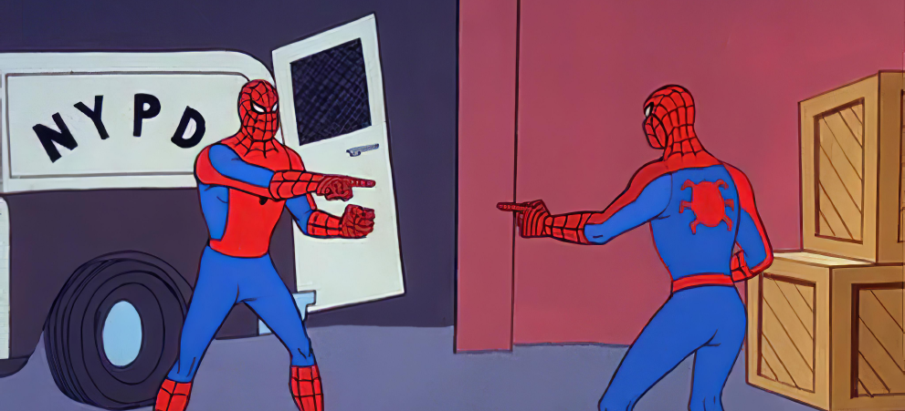

Tanya Fokina, Tbilisi A11y & UX Day.
Typography is the way how the texts are arranged and visually appealing.

Accessibility in typography is about visual clarity.
How it is easy to see, distinguish, and recognize the characters and words.
Usually, sans-serif typefaces are more legible than serif, display, or monospaced ones.


The minimum font size for desktops is 16 pixels ; for mobiles, the good size is 12 pixels and bigger.
Text must be resizable between 200-400% without requiring horizontal scrolling in a full-screen window.
Responsive typography technique where the text scales automatically with the screen size.
For text use flexible units, such as %, em, or rem instead of absolute font sizes like pixels.
Allow users to zoom into page content in browsers between 200% and 400% without loss of content or functionality.
Regular fonts are good for most text. Bold is suitable for headings and emphasis. Thin and light fonts work best for decorative text.


It's easier to read texts with larger uppercase letters in proportion to lowercase letters.

Use typefaces with more open aperture.

Bigger letter spacing helps with the legibility of all-caps text or thin fonts.
Smaller letter spacing is legit only for large fonts.
Visual shape or design of a letter.
Use typefaces where similar letters are easy to tell apart.

On a desktop, space between lines should be 1.5 to 2 times the text size. On mobile phones, make it 1.3 to 1.45 times.
The optimal number of words per line is between 45 and 80 with spaces. It depends on language and screen size.
Difference in brightness between two colors: For text and its background.
Big text should be 3 (3:1) to 7 (7:1) times lighter than its background. Small text needs to be at least 4.5 (4.5:1) times lighter than its background.
This is a learning disability that affects reading skills. Unlike other learning disabilities, intelligence isn't affected.
About 10% or 750 million of the world's adults are dyslexic.
Dyslexia can appear differently and be more or less common depending on language rules and writing system.


User testing: Check the speed when users read from the design and the same text without it.
Automation tools: Find the problems with text contrast.
How easy text is to read.
Scored automatically via readability calculators based on readability formulas.